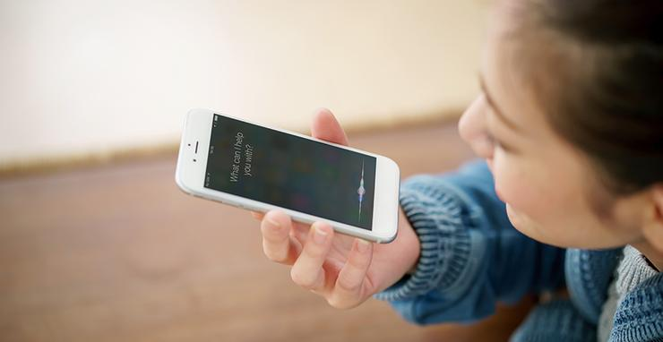

<ion-header>

  <ion-navbar color="secondary" text-center>
    <ion-title>Add a medicine record</ion-title>
  </ion-navbar>

</ion-header>


<ion-content >
    

  <div text-center padding class="info">
<h1>Add a medicine record</h1>
<p>A detailed health history helps a doctor diagnose you better</p>
</div>
<div class="button-record" text-center>
  <button ion-button large col-8 color="secondary" (click)="goToAddRecordedPage()">Add a record</button>
</div>

</ion-content>
